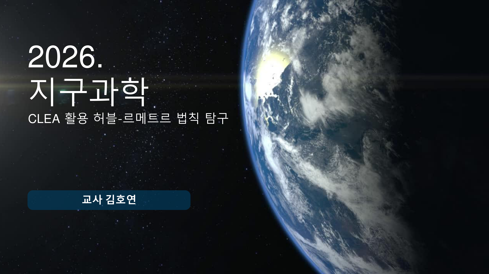
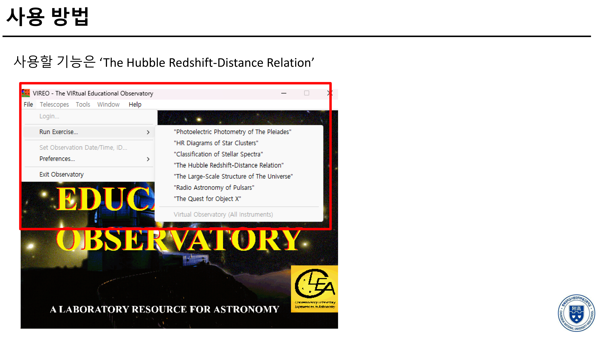
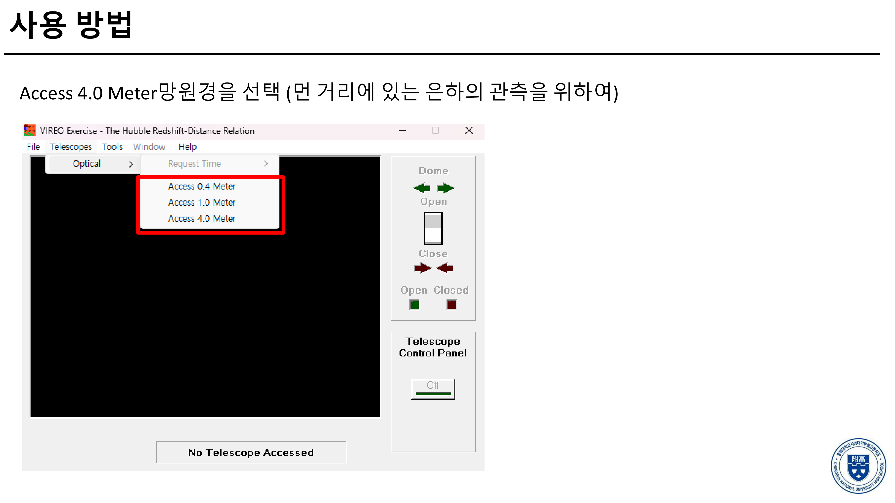
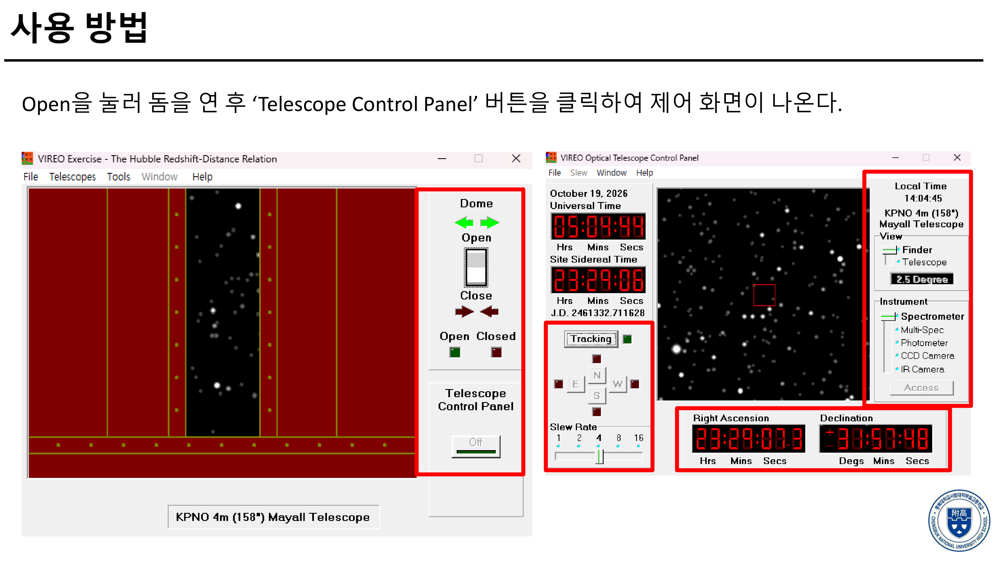
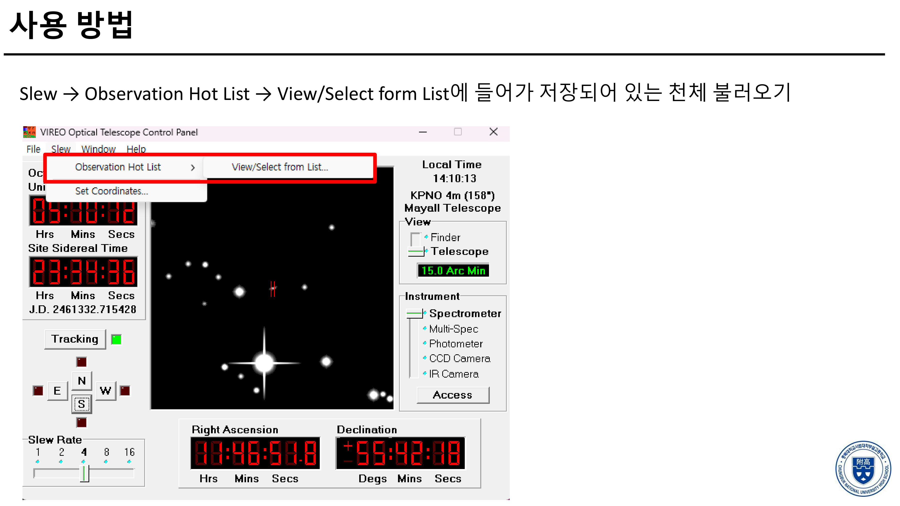
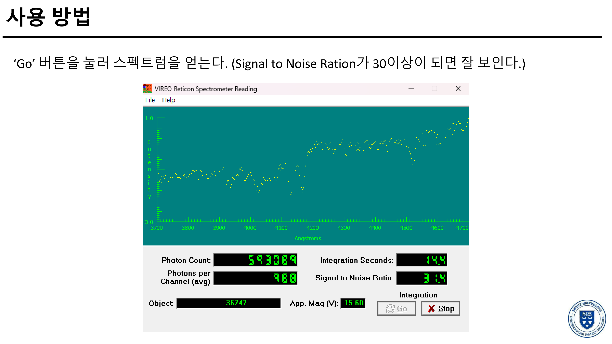
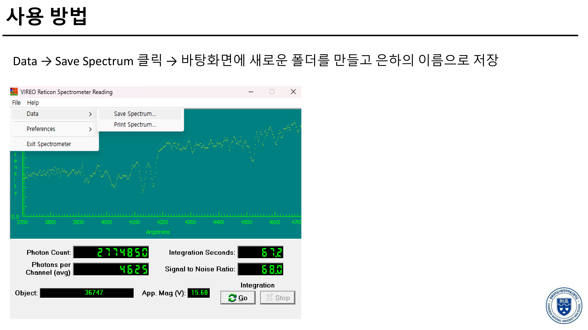
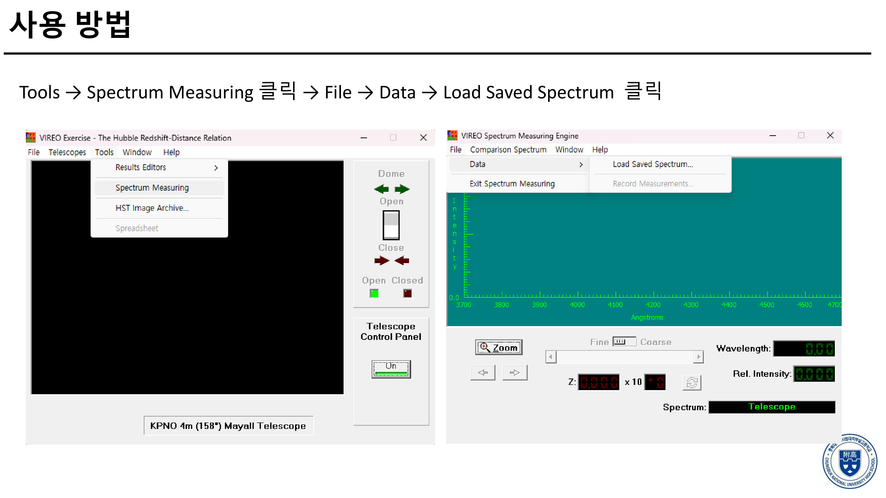
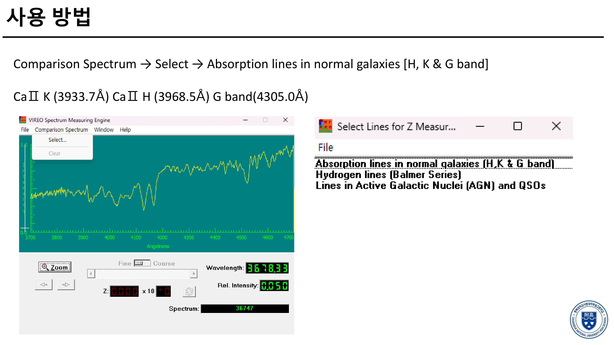

VIREO 프로그램을 활용한
허블-르메트르 법칙 탐구 활동
미국 게티즈버그 대학 천문학 연구팀이 개발한 현대 천문학 가상 관측 소프트웨어 CLEA VIREO(The Hubble Redshift-Distance Relation)를 활용하여, 거대 은하단 내 13개 실제 외부 은하의 겉보기 등급(m)과 칼슘(Ca II) H·K 흡수선 스펙트럼을 직접 관측·측정합니다. 거리-후퇴속도 분산형 그래프 작도와 추세선 기울기 분석을 통해 우주의 팽창률(허블 상수 H)을 직접 도출해봅니다.
외부 은하를 형태에 따라 분류하고, 광도계 관측을 통해 은하의 겉보기 등급과 거리 지수를 분석할 수 있다.
외부 은하의 스펙트럼 적색 편이로부터 후퇴 속도를 계산하고, 허블-르메트르 법칙 그래프를 통해 우주 팽창을 설명할 수 있다.
현대 대구경 망원경(4.0m)과 CCD 분광기, 분광 분석법의 원리를 이해하고 실제 천문 관측 데이터를 처리할 수 있다.
CLEA VIREO 관측 및 데이터 측정 상세 매뉴얼
처음 프로그램을 다루는 학생도 혼자서 따라할 수 있도록 정리된 안내서입니다. 사진을 클릭하면 원본 고해상도(3600×2025)로 확대하여 보실 수 있습니다.

압축을 해제한 폴더에서 VIREO.EXE를 실행합니다. 상단 메뉴의 File > Log In을 선택하고 본인의 학번과 이름을 입력합니다. (OK 클릭)

상단 메뉴 File > Run > The Hubble Redshift-Distance Relation을 클릭합니다. 망원경 돔 제어창에서 Telescope > Access 0.4 / 4.0 Meter를 선택하여 주망원경 제어판을 엽니다.

망원경 제어판에서 Dome: Open 버튼을 눌러 슬릿을 열고, Tracking 스위치를 켜서(ON) 지구 자전에 따른 천체 추적을 활성화합니다.

상단 Slew > Observation Table > Target List를 열고, 활동지 13개 은하 중 관측할 대상을 선택한 뒤 OK (Slew to Target)을 누릅니다. 망원경이 자동으로 해당 은하 좌표로 이동합니다.

제어 패널에서 계기를 Photometer로 전환합니다. V 필터(노란색 가시광선 영역)를 선택하고 Start Reading을 누르면 은하의 겉보기 등급(m) [단위: mag]이 정밀하게 산출됩니다. 이 값을 아래 활동지 표에 기록합니다.

타원 은하의 표준 절대등급을 M = -21.0 mag로 둘 때, 거리 지수 공식 m - M = 5 log r - 5를 적용하여 거리 r [단위: Mpc]를 구합니다. (본 웹 활동지에 M과 m을 입력하면 r이 자동으로 계산됩니다!)

제어 패널에서 계기를 Spectrometer로 전환합니다. 은하의 중심핵이 분광기 슬릿(Slit) 정중앙에 위치하도록 방향키(N, S, E, W)로 미세 조정한 뒤 Start Reading을 누릅니다.

광자가 누적되면서 스펙트럼 곡선이 매끄러워집니다. 화면 상단의 Signal/Noise 비가 30 이상이 될 때까지 기다린 후 Stop Reading을 누릅니다. (거리가 먼 어두운 은하일수록 측정 시간이 조금 더 걸립니다.)

스펙트럼에서 오른쪽으로 치우쳐 푹 꺼진 K선(정지파장 3933.7Å) 및 H선(정지파장 3968.5Å) 골짜기 중심을 클릭합니다. 화면 하단에 관측 파장(λ), 적색 편이량 z = Δλ / λ0, 그리고 후퇴 속도 v = c × z [단위: km/s]가 산출됩니다.

활동지에 제시된 13개 은하를 모두 측정하여 아래 활동지에 입력하고, 분산형 차트에 점을 찍어 추세선 기울기인 허블 상수 H [단위: km/s/Mpc]를 도출합니다. 모든 작성을 마치면 '활동지 PDF로 저장 / 인쇄'를 눌러 제출합니다!
VIREO 프로그램을 활용한 허블-르메트르 법칙 탐구 활동지
지구과학 VIREO를 이용한 허블-르메트르 법칙 분석하기
1 활동 1. 은하들의 물리량을 조사해보자. (허블법칙으로 구한 거리 제외하고 채울 것)
|
No
|
천체명
은하 번호
|
절대등급 (M)
[mag]
|
겉보기등급 (m)
[mag]
|
은하 거리 (r)
[Mpc]
|
적색편이 (z)
[Δλ / λ₀]
|
후퇴속도 (v)
[km/s]
|
허블거리 (rH)
[Mpc]
|
|---|
* 관측한 절대등급 M [mag]과 겉보기등급 m [mag]을 입력하면 거리 r [Mpc]가 자동 계산되며, 적색편이 z를 입력하면 후퇴속도 v [km/s]가 자동 산출됩니다.
2 활동 2. 거리와 후퇴속도 사이의 관계를 나타낼 수 있는 분산형 그래프(산점도)를 그려보자.
3 활동 3. [활동 2]에서 추세선의 기울기가 의미하는 값을 생각해보고 이를 활용하여 [활동 1]의 허블법칙을 이용하여 거리(Mpc)를 구해보자.
v = H × r ⇒ rH = v / H [Mpc]4 활동 4. 활동을 통해 새롭게 알게 된 내용을 정리하여 ‘완전한 문장’으로 작성하시오.
* 'PDF로 저장 / 인쇄하기'를 클릭한 뒤 대상(프린터)을 'PDF로 저장(Save as PDF)'으로 지정하시면 됩니다.